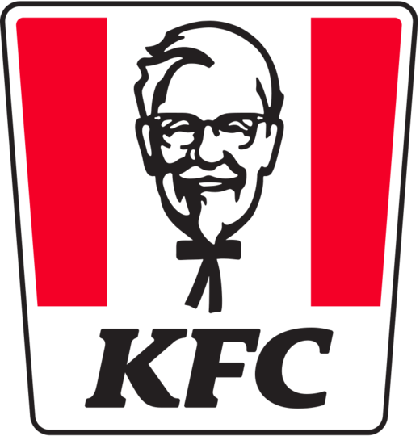

Sean Gutierrez
I have been working for around three years. My first job was at KFC. I worked with my friend three days a week for around 8 hours per shift. The workload was very light since there were not too many customers. Our manager was very nice and let us do our own thing when there were no customers in the store. I had the duty of talking to people in the drive through and taking people's orders.
My second job was working at a poke shop. It was more difficult than my last job. I had more tasks than last time. I had to memorize all the ingredients since I had to serve people right in front of them. I also had to learn how much to scoop into the bowl and how much sauce to put into the bowl. It was stressful at first since I had never worked a job where the customers can see what you are doing. Over time, I got the hang of it and I became less stressed. I learned key skills from the job like customer service and having patience with the customers. The job also paid way more than the previous one I had and I did not have to work as many hours.
My last job was working at In-N-Out. This fast food restaurant is known for being very busy and hectic. The rumors were not wrong as the workload was pretty difficult. At all times, the restaurant would be packed with a line sometimes forming out of the door. I was in charge of taking customers orders and giving out food in the drive through. Although it may seem easy, it felt like there was no time for me to take a break due to the massive amounts of people trying to order food. Even though the workload was severe, the payout was substantially higher than my two previous jobs. Therefore, I worked hard every day so I could get my paycheck and go home. Throughout my time working here, I learned that not everything in life is easy and you have to work hard to become successful
Experience
Worker
• Helped mop the floors
• Took orders
• Worked the drive through
• Helped cook some of the meals
Education
UC Riverside
Portfolio
